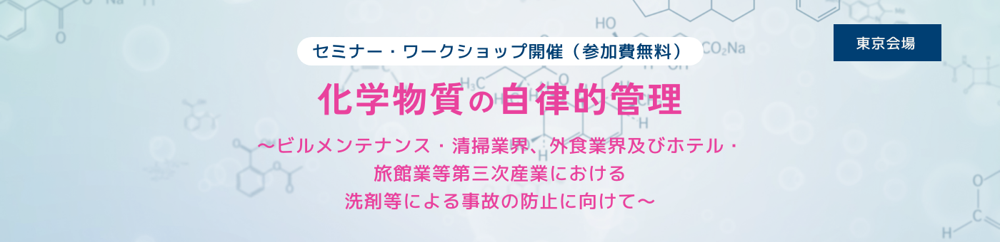
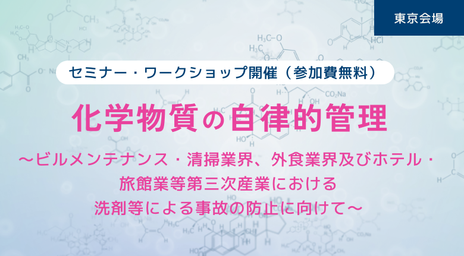
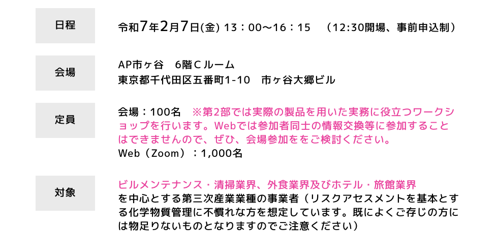
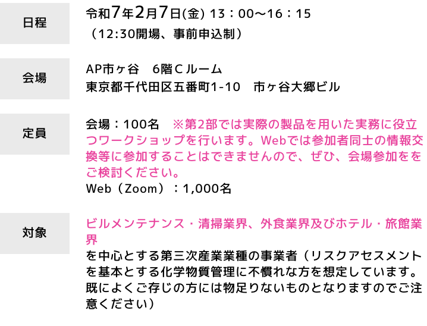

令和６年４月より全面施行となった労働安全衛生関係法令による新たな化学物質規制では、規制対象物が、危険有害性が確認されている物質全てに拡大され、業種・事業規模を問わず、化学物質管理者の選任やリスクアセスメントの結果に基づきばく露を最小限とすること等が義務付けられています。この中にはあまり危険な化学物質と認識されていない洗浄剤なども含まれます。
また、2月は化学物質管理強調月間です。この月間は職場における危険・有害な化学物質管理の重要性に関する意識の高揚を図るとともに、化学物質管理活動の定着を図ることが目的です。本イベントは化学物質管理強調月間の関連イベントです。
当日は、ビルメンテナンス・清掃業界、外食業界及びホテル・旅館業界を中心とする第三次産業業種の事業者を対象に、事故事例の多い洗浄剤による事故の防止について解説したうえで、各業界の事例、取組、課題及び対応について代表者によるパネルディスカッションを行います。また、事故防止に向け、上記2つの業種別に洗浄剤のSDSを用いた実践的なワークショップを行います。皆様方のご参加をお待ち申し上げます。
※東京会場の申込みは終了しました
開催概要


プログラム
第１部 職場における化学物質管理の理解促進のためのセミナー
（1）基調講演：洗浄剤の自立的管理について（仮）
講師：（独）労働者健康安全機構 労働安全衛生総合研究所 化学物質情報管理研究センター 化学物質情報管理部特任研究員 伊藤 昭好
（２）パネルディスカッション
テーマ：第三次産業事業者における洗浄剤の化学物質管理の課題と対応
コーディネーター：伊藤 昭好
パネリスト：
・清掃・ビルメンテナンス業界から1名
・外食業界から1名
・ホテル・旅館業界から1名
・洗浄剤のメーカーから1名
・厚生労働省担当官
第２部 化学物質管理強調月間イベント ～実務に役立つワークショップ～
業界別の小グループに分かれ、業務で用いることが多い塩素系洗剤を用いて、SDSの確認、ヒヤリ・ハット事例の交換を含めたリスクの見積、リスク低減措置の検討、多様な労働者への伝え方・リスク低減措置の遵守のさせ方について検討していただきます。
アクセス
AP市ヶ谷
東京都千代田区五番町1-10 市ヶ谷大郷ビル 8F
JR線・東京メトロ有楽町線/南北線・都営新宿線 市ヶ谷駅 徒歩1分
＞ 施設のサイトはこちら
お申し込み
お申し込み受付は終了しました
お問い合わせ
令和６年度 厚⽣労働省委託事業「令和６年度化学物質管理に係る普及・啓発事業」事務局
株式会社one
- E-mail :risk-communication@one-inc.co.jp
- TEL: 080-9044-5226（受付時間［平⽇］10時〜17時）
- 担当： 田中、中山
※テレワーク推進中につき、極⼒電⼦メールでのお問い合わせをお願い申し上げます